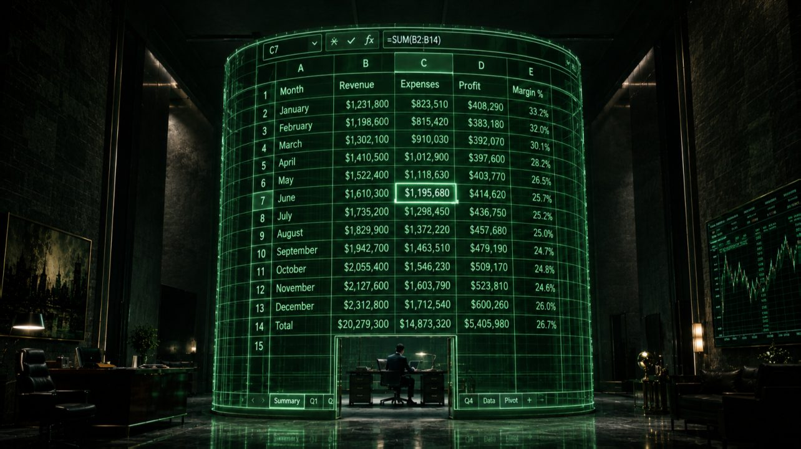

← Цикл «Финансовая архитектура» · 4 из 7
Золотая клетка Excel: лимиты ручного управления

Крупнейший банк мира ослеп из-за одной формулы в Excel. Цена прозрения — 6,2 миллиарда долларов.
В 2012 году JPMorgan Chase потерял 6,2 млрд. Деньги сожгли агрессивные ставки трейдера, вошедшего в историю как «Лондонский кит».
Но самое страшное вскрылось позже — когда расследование опубликовало отчёт.
Убыток не был внезапным. Позиция трейдера разрасталась месяцами. Почему же хвалёная модель управления рисками (Value-at-Risk) крупнейшего банка мира не забила тревогу?
Потому что эта модель работала через серию таблиц Excel.
В отчёте сухо сказано: данные переносились между таблицами «вручную, методом копирования и вставки». В какой-то момент аналитик допустил ошибку: он вычел старое значение ставки из нового и разделил результат не на их среднее, как надо, а на сумму.
Одна съехавшая формула. Один ручной копипаст.
Эта ошибка не создала убыток напрямую. Она сделала кое-что опаснее — замаскировала риск. Расчётная волатильность занижалась ровно вдвое. Система видела 50% реальной опасности. Лимиты не срабатывали, красные лампочки не загорались — и позиция бесконтрольно росла, пока не пробила дно.
Думаете, это исключение?
Год 2008-й. Юристы, работавшие на Barclays, при экстренной покупке активов рухнувшего Lehman Brothers красиво отформатировали Excel-файл со списком контрактов к покупке. Строки с токсичными активами, которые банк не собирался брать, были просто «скрыты» (Hide rows). При конвертации файла они снова стали видимыми, и Barclays по ошибке купил 179 мусорных контрактов, получив ненужные обязательства на миллионы.
Ошибки в Excel не убивают бизнес напрямую. Они делают его слепым.
Мануфактура против конвейера
Excel — одна из величайших программ в истории. Гениальный «чистый лист» для прототипов, проверки гипотез и старта бизнеса.
Но когда компания выходит на Scale-up и делает х10, уютный лист превращается в золотую клетку. Управлять корпорацией с оборотом в миллиард через ручные таблицы — это как направлять движение нефтяного танкера деревянным веслом.
CEO часто попадают в «иллюзию бесплатности». Зачем платить за ИТ-системы, интеграторов и хранилища данных, если финансист Маша отлично всё сводит в табличке? Это же бесплатно!
Давайте посчитаем реальную цену этой мануфактуры.
В ручной парадигме ваш дорогой аналитик тратит 80% времени на то, чтобы выгрузить данные из 1С, скопировать из CRM, вставить в нужную вкладку, вычистить дубли и «протянуть» формулы. Он работает не как финансист, а как оператор ввода данных. На сам анализ, поиск дыр в маржинальности и моделирование остаётся 20% времени и ноль энергии.
Вы платите сотни тысяч за ручную ковку и перевозку по цеху на тележках там, где давно должен стоять конвейер и гидравлический пресс.
Человеческий фактор и «Фактор автобуса»
Ручная архитектура держится на двух самых ненадёжных элементах во Вселенной: честном слове и памяти одного человека.
В каждой растущей компании есть свой «Царь-файл». Монстр на 50-100 мегабайт, который открывается три минуты, пестрит разноцветными заливками и прячет сотни макросов. Как он работает, не знает никто. Даже его создатель относится к нему не как к рабочему инструменту, а, скорее, как к магическому артефакту.
Это критически обрушивает «Фактор автобуса» (Bus factor). Этот отчасти иронический показатель отражает, сколько людей должен сбить автобус, чтобы компания потеряла контроль над процессами. В случае ручного Excel он обычно равен единице.
Создатель файла ушёл в отпуск, уволился или заболел — и компания мгновенно слепнет. Тронуть ячейки боятся все: «если здесь поменять цифру, на листе №14 всё ломается». А ещё, мистическим образом, этот файл вообще перестаёт открываться, и спасает только его вчерашняя резервная копия.
Система, зависящая от настроения, внимательности и здоровья одного человека, не может считаться надёжно масштабируемой.
Свет мёртвых звёзд
Астрономы знают пугающую вещь: глядя в ночное небо, мы смотрим в прошлое. Свет далёких звёзд идёт до Земли миллионы и миллиарды лет. Звезды, которой вы любуетесь сегодня, возможно, давно нет — она взорвалась тысячелетия назад, но её свет ещё летит.
Ручной управленческий учёт работает по тем же законам.
У ручной сборки данных колоссальная инерция. Пока выгрузится 1С или произойдёт экспорт из SAP или SaaS-системы, пока данные сведутся с CRM, пока финотдел найдёт потерянные транзакции и исправит форматы, — проходит 10–20 дней.
Когда 20-го числа CEO торжественно открывает отчёт, он смотрит на свет мёртвой звезды.
Раньше с этим мирились. Но на скоростях e-commerce 2026 года рынок меняется каждую неделю. Маржа ушла в минус первого числа, а увидели вы это только двадцатого. Все эти 20 дней вы принимали решения, опираясь на несуществующую реальность: вкладывали в рекламу, закупали товар, нанимали людей. Вам казалось, что вы осторожно идёте по краю обрыва, хотя на деле уже летели в пропасть.
Скорость решений в компании всегда равна скорости прохождения данных по её системам. Ручной Excel — это тромб в информационной кровеносной системе бизнеса.
Демонтаж мануфактуры
Что делает CFO-архитектор, заходя в такую компанию? Он не рисует «табличку покрасивее». Он начинает безжалостный демонтаж мануфактуры.
Главное правило: человек не должен переносить данные. Человек должен принимать решения.
Архитектор разделяет систему на три независимых уровня:
-
Хранение (1С, ERP, WMS). Здесь живёт первичный хардкорный учёт. Никаких правок «задним числом» ради красоты отчёта.
-
Транспорт (API и шины данных). Нервная система. Данные текут в единое хранилище автоматически — ночью или в реальном времени, без рук аналитика Маши.
-
Визуализация (Power BI, Tableau, Superset). Лобовое стекло кабины пилота. CEO открывает дашборд с утра и видит пульс компании на текущую секунду.
А где здесь Excel?
Он возвращается на своё место и становится тем, чем был задуман: инструментом для быстрых гипотез и песочницей для сценарного моделирования.
А Маша, освобождённая от рабского копипаста, наконец начинает оправдывать зарплату. Она не «собирает факт» — она ищет аномалии в дашбордах, разбирает когорты клиентов и считает юнит-экономику новых направлений.
Мануфактура закрыта. Завод запущен.
Эпилог. Идеальная машина и грязная реальность
Отказ от ручного Excel — это уже не дань ИТ-моде. Это гигиенический минимум для любого бизнеса, который хочет расти дальше «одного ларька».
Если ваша система управления рисками зависит от того, тот ли столбец скопировал аналитик, то вы играете в русскую рулетку. И, как показал опыт лондонских трейдеров JPMorgan, проигрыш может исчисляться миллиардами.
Стройте цифровые конвейеры. Убирайте человеческий фактор из рутины. Автоматизируйте передачу данных.
Казалось бы: вот теперь система безупречна. Дашборды светятся, API перекачивает терабайты, архитектура работает как швейцарские часы.
И тут идеальная цифровая машина даёт сбой. На складе обнаружена недостача на десятки миллионов и себестоимость текущей партии улетает в космос. Вы проверяете код — он чист. Проверяете серверы — они работают.
Так в чём дело?
А в том, что любые стерильные алгоритмы рано или поздно разбиваются о суровую физику реальности. О грязные паллеты, сломанные сканеры штрих-кодов и кладовщика Петровича, который вчера отгрузил товар, но забыл нажать кнопку в терминале.
Ведь автоматизация без человеческого контроля и без ответственности за то, что попадает на вход, и за то, как должен выглядеть результат, — это уже не водопровод, а канализация. Те же трубы, тот же напор, тот же глянцевый дашборд на выходе. Только теперь система с идеальной скоростью разносит по всей компании не чистую воду, а нечистоты. И чем совершеннее пайплайн, тем быстрее и тем незаметнее.
О том, почему идеальная цифровизация не работает без жёсткой физической дисциплины и как подружить высокие технологии с «Фактором Петровича», — в следующей статье.